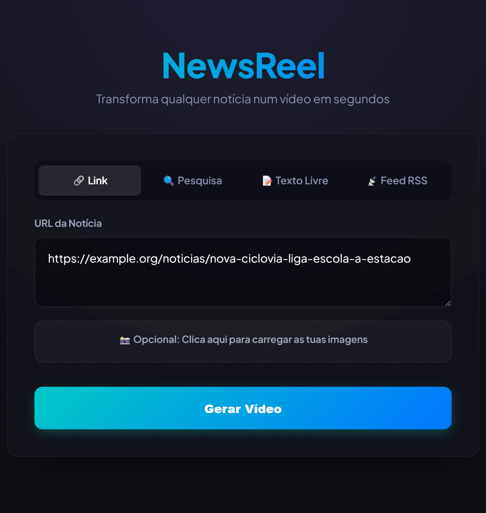
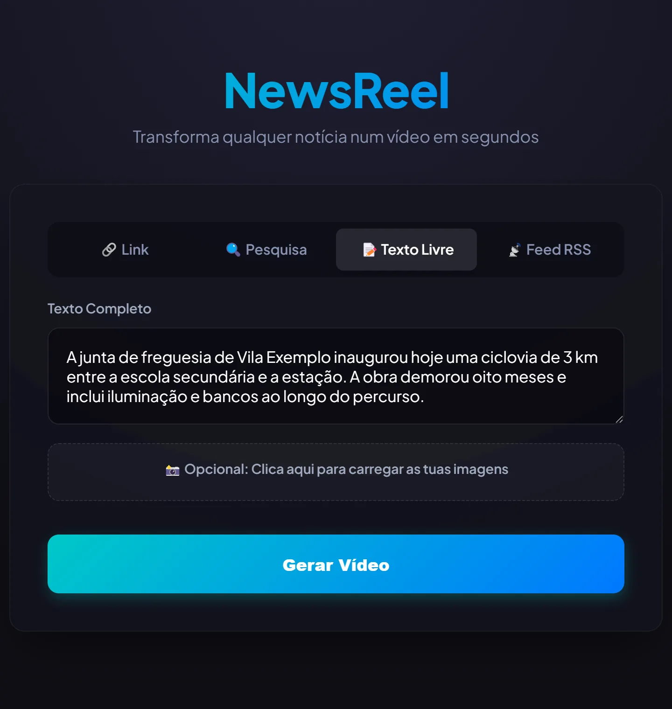
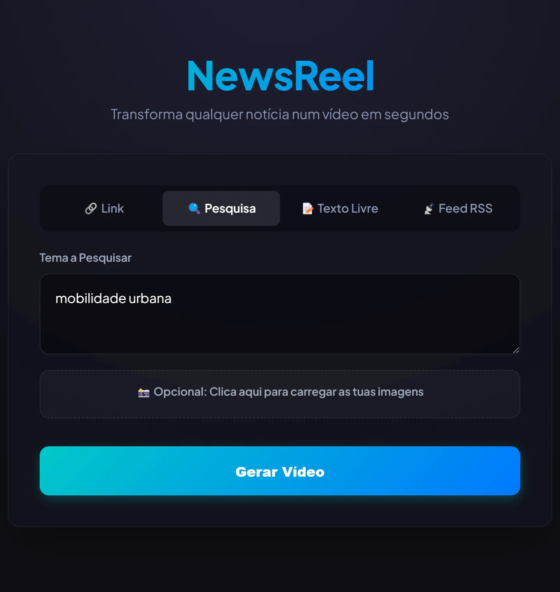

Any starting point
Paste a link, search a topic, write the text yourself or pick a story from curated RSS feeds.
NEWS TO VIDEO · PAUSED
From a news story to a short video.
NewsReel takes a link, a topic, a free text or an RSS feed, simplifies the story with AI, narrates it in European Portuguese and assembles a vertical video with images and highlighted captions.
Paste a link, search a topic, write the text yourself or pick a story from curated RSS feeds.
Natural European Portuguese voice, with word-by-word captions that highlight what is being said.
Relevant images are collected automatically (or uploaded), then animated and assembled into an MP4.
Screenshots
The web interface, with an invented news story as input.



The project is paused but functional. It runs locally and is not available for download.